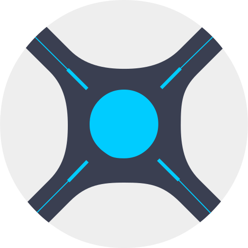
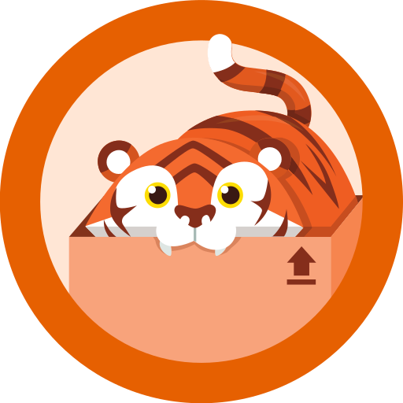
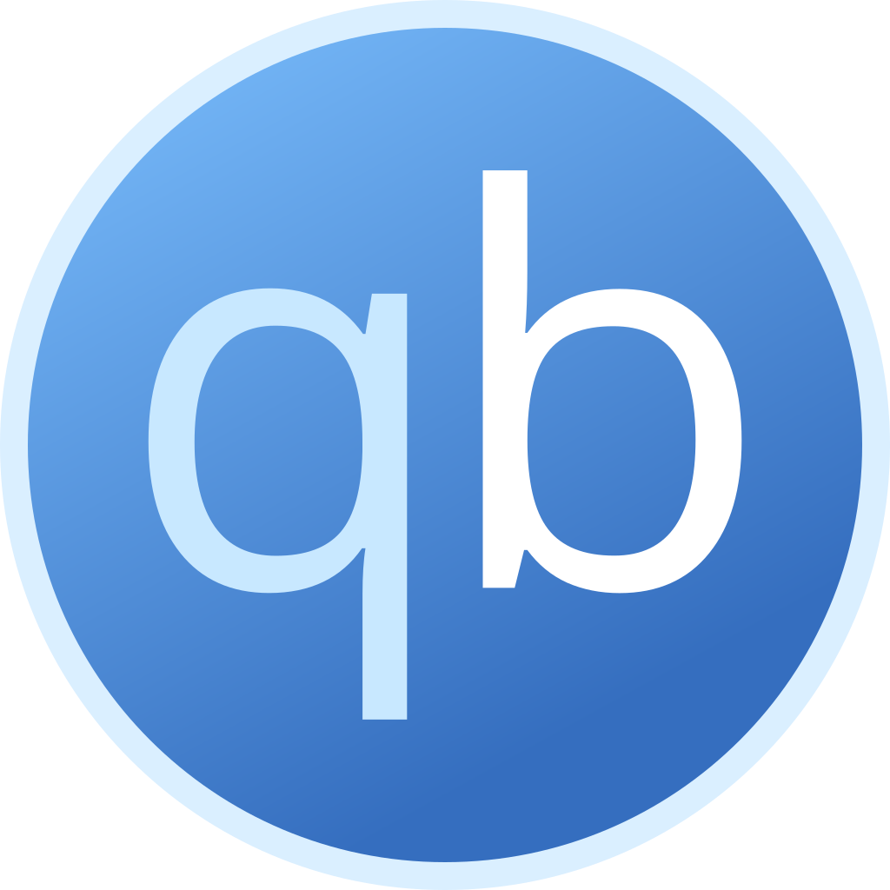
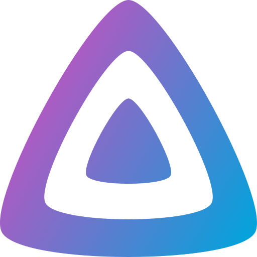
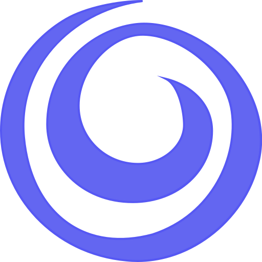

Plugs into the stack you already run
- Seerr
- Radarr

Sonarr
Prowlarr
qBittorrent
Jellyfin- Cleanuparr

Reclaimerr
Your stack works in silence.
Quai makes it talk.
Started by your server, not by you. On the Lock Screen and in the Dynamic Island, even with the app closed.
Every Live Activity is a flow you can shape.
Pick the steps, what moves a title from one to the next, and what each step shows. The console previews the Lock Screen as you edit; Test sends it to your iPhone.
Know when it breaks, and when it’s fixed.
A service down, a disk filling up, an indexer failing, a deletion coming. One notification when it starts, one when it’s over.
Also in the app
- RequestsApprove or decline what the household asks for in Seerr.
- To fixNo release for days, stalled downloads. Snooze until a release is grabbed.
- Out todayToday’s episodes and which ones are already here.
Your data stays home.
Only the update travels.
Quai Home runs on your server, next to your media apps, and keeps everything: addresses, API keys, the journal. Apple only delivers Live Activity updates signed with the app’s push key, so a small relay, Quai Cloud, signs and sends them. Use ours, or run your own.
Why a cloud at all?
Apple only accepts Live Activity updates signed with the app’s push key. Ours does it for you: no Apple developer account needed.
What does it see?
The update itself, like a title and its progress, just long enough to send it. Nothing about your server, nothing kept.
No port to open
Quai Home calls out to Quai Cloud. Nothing from outside reaches your server.
Nothing goes through us
Both parts run on your hardware and your server talks to Apple directly.
What you need
An Apple developer account, your own push key (.p8, key ID, team ID) and your own build of the app.
Up and running in four steps.
No account to create, no port to open.
-
Run Quai Home
One Docker container on your server, next to your media apps. Your data lives in its volume.
Install guide on GitHub › -
Connect your services
Open the console. Add each app’s address and API key; Quai sets its own webhooks in Radarr and Sonarr.
-
Link a Quai Cloud
Ours, with nothing to set up. Or yours, with
QUAI_CLOUD_URL.ConnectedOur Quai CloudNothing to set upYour own Quai CloudYour Apple push key, your build of the app -
Pair your iPhone
Install the beta from TestFlight, then scan the QR code from the console. It carries your public address too, so the app works away from home.
Get the betaScan with the Quai appOne code per iPhone, valid 10 minutes.iPhone paired
Questions
Is Quai a Jellyfin or Seerr client?
No. Keep watching in Jellyfin and requesting in Seerr. Quai follows what happens in between, and tells you.
Why do I need Quai Cloud if Quai Home is on my server?
Apple only delivers Live Activity updates signed with the app’s push key. Quai Home keeps your data; Quai Cloud only signs and sends the update. Use ours, or run your own with your Apple developer account.
Does it work when the app is closed?
Yes. Live Activities are started and updated by push, so you never need to open the app.
Can the whole household use it?
Yes. Pair each iPhone with its own QR code; each one chooses which Live Activities and alerts it gets.
Plex, Emby, Android?
Not for now. Quai is built for Jellyfin and iPhone.